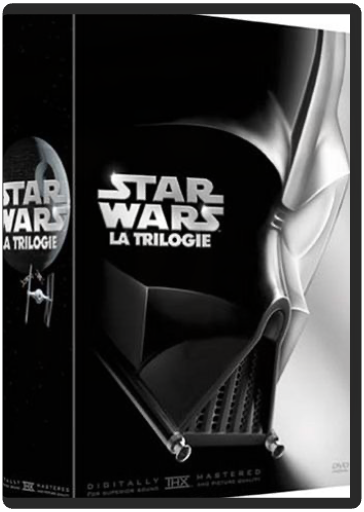
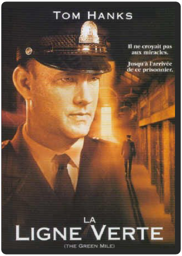

Bertrand, avocat d?assises. Brillant. Médiatique. Volubile. Cultivé. Cérébral. Compliqué. Pas très très courageux. Aime les femmes, surtout pour leur parler. Fraîchement arrivé à Monaco pour y assurer la défense d?une meurtrière septuagénaire. Christophe, agent de sécurité chargé de la protection de Bertrand. Franc. Direct. Taciturne. Sportif. Etudes interrompues en cinquième. Aime les femmes sauf pour leur parler. Admire chez les autres la culture et la maîtrise du langage qui lui font défaut. Audrey, présentatrice météo sur une chaîne câblée à Monaco. Ambitieuse. Culottée. Sexy. Incontrôlable. N?a pas du tout l?intention de réciter le bulletin météo pendant longtemps. Comprend assez mal le sens de certains mots, notamment ?limites?, ?tabous?, et ?scrupules?. Il aurait mieux valu que ces trois-là ne se rencontrent pas?  la guerre des étoiles : la trilogieGeorge Lucas, Irvin Kershner Peu de films peuvent se targuer de représenter un tournant, une étape dans l'histoire du cinéma ; encore moins peuvent être décrits comme des phénomènes de société, dont l'influence sur des générations entières, bien au-delà des salles de cinéma, est incontestable et dont l'impact reste intact quelques trois décennies après leur sortie. La saga intergalactique de George Lucas, combat rétro-futuriste entre le bien et le mal qui emprunte à la fois aux drames antiques, aux contes de fées et aux récits médiévaux, réunit ces deux caractéristiques, et le véritable culte qu'elle a engendré chez des millions de fans à travers le monde ne pouvait susciter qu'une impatience grandissante quant à son édition sur le support DVD, qui était en passe de devenir une légende elle aussi. Maintenant que la chose est faite, une seule question se pose : le coffret est-il à la hauteur de l'attente ? La réponse, sans vrai suspense, est oui, un grand oui ; du côté des films, le transfert est absolument parfait, jamais le casque de Dark Vador n'aura été aussi noir et les sabres lasers sont plus brillants que jamais. Le son n'est pas en reste, avec un encodage en 5.1 tel qu'on ne l'avait tout simplement jamais entendu avant. Passons à la controverse : plus personne ne l'ignore, George Lucas a apporté un très grand nombre de modifications visuelles et sonores à ses films afin de les lier plus logiquement à la seconde trilogie, ce qui a créé nombre vexations et colères dans le camp des « purs et durs ». Mais force est de constater que ces changements, bien mieux réalisés techniquement que ceux opérés en 1997, ne gênent en rien le spectacle et aident effectivement à relier les deux parties de la saga. Du côté des suppléments, George Lucas a su écouter ses admirateurs et leur offrir un beau cadeau : le documentaire d'une heure et demie sur les coulisses du tournage est une merveille qui, en plus des habituelles images inédites, archives et autres interviews, nous délivre des informations peu connues, notamment sur les difficultés quasi insurmontables qui se sont dressées sur le chemin de la Guerre des Etoiles. Ajoutons encore à cela des commentaires audio avisés, des documentaires sur la naissance du sabre laser et sur l’univers sonore du film, des bouts d'essais des comédiens, des spots télévisés, des jeux vidéo. Et vous saurez qu'une fois ce coffret entre vos mains, la Force sera réellement avec vous. David Rault  la ligne vertefrank darabont Magistral ! Trois heures qui filent grâce au jeu sans faute d'un casting parfait, à l'intelligence et à la finesse d'une mise en scène sobre, autant que dépourvue d'artifices, mais aussi grâce à l'incroyable histoire écrite par Stephen King. Celle, au début du siècle, d'un condamné à mort doté d'étranges pouvoirs et capable de miracles ! La copie proposée par ce DVD est parfaite. Des petits problèmes de compression çà et là, mais rien de dommageable. Le son en Dolby digital 5.1 sur les pistes française et anglaise du disque recrée l'ambiance intimiste du « Bloc E », atmosphère qui sied à l'histoire et met en valeur la musique de Thomas Newman. Un court making-of réalisé sur les lieux du tournage complète notre plaisir, à l'évidence… évident ! —Max Renne  Malgré tous les joints fumés dans La main qui tue, le film semble vous prévenir qu'en abusant du pétard, vous achetez un ticket pour l'enfer. Les premières victimes de la main sont les copains d'Anton (Devon Sawa), précédemment propriétaire de la main avant qu'il ne la coupe, Mick (Seth Green), qui se retrouve avec une bouteille de bière incrustée dans le squelette, et Pnub (Elden Henson), dont la tête est tranchée par la lame d'une scie circulaire que l'on découvre un peu plus tard au bout d'une fourchette de barbecue. Par la suite, tous deux se transforment en morts-vivants plaisantins. Voilà, vous en savez assez pour aborder ce film, à l'humour potache et sanglant, idéal pour une soirée d'Halloween. —Jeff Shannon la neuvième porteroman polanski Avec La Neuvième Porte, Roman Polanski nous plonge au cœur d'un thriller maléfique dans lequel la toute-puissance des livres refait surface, rapprochant les manuscrits ancestraux des flammes de l'enfer. Naviguant en eaux troubles entre châteaux et bibliothèques, Dean Corso, interprété par Johnny Depp, au fil des collections de littérature obscure, va faire l'objet d'une intrigue complexe opposant richissimes collectionneurs à Satan lui-même. Emmanuelle Seigner se fera son ange gardien, mais ses yeux, à travers l'iris de son mari, en disent long sur ses penchants. Roman Polanski, en voyageur baroque derrière la caméra, effleure les flammes et nous éblouit par ses images, son imagination et son humour sarcastique. —Christophe Gagnot |  Le bonheur se situe ailleurs et l'herbe est toujours plus verte chez le voisin : telles sont les juvéniles croyances qui poussent Richard (le non moins juvénile Leonardo DiCaprio) à partir à la recherche du mythique paradis perdu qui, selon les dires d'un Robert Carlyle plus qu'halluciné, se trouverait sur les rivages d'une plage isolée de la Thaïlande. Si l'on se place dans la peau d'un baroudeur assoiffé d'aventures et d'expériences insolites, La Plage est une brillante adaptation de l'excellent roman d'Alex Garland : des décors somptueux à faire pâlir les plus beaux guides touristiques ; une communauté hippie autarcique et soudée ; du cannabis à perte de vue… le bonheur à l'état pur ! Le seul reproche que l'on puisse faire au réalisateur Danny Boyle (Trainspotting), c'est peut-être d'avoir cédé à la pression médiatique américaine et d'avoir axé son oeuvre exclusivement autour du héros du très regretté Titanic (néanmoins étonnamment crédible et convaincant tout au long du film, notamment dans son extraordinaire métamorphose psychologique), et d'avoir délaissé (soyons chauvins !) Virginie Ledoyen et Guillaume Canet, comme en témoignent la dizaine de scènes coupées et proposées en bonus, dans lesquelles ils occupent une place prépondérante. Pour ce qui est de la qualité, le DVD est irréprochable : un son et une image frisant la perfection et des suppléments incontournables, parmi lesquels un début et une fin inédits, des commentaires de Danny Boyle, le clip des All Saints… Un bonheur, certes éphémère, mais qui se déguste inlassablement. —Frédéric Thorens  Film d'action et d'espionnage, La Recrue est une bonne occasion de découvrir "l'affrontement" de deux écoles d'acteurs, représentées par le vétéran Al Pacino et une étoile montante, Colin Farrell. C'est aussi une façon de rentrer de plain-pied dans le monde de la CIA qui a entrouvert ses portes pour la réalisation du film. James Clayton est l'un des plus brillants étudiants de son pays, et se trouve choisi par Walter Burke pour entrer à la CIA. Pour cela, Clayton doit tout d'abord subir l'entraînement intensif de l'agence. Il se voit ensuite confier une mission : démasquer une taupe. Il ne devra faire confiance qu'à une seule personne, lui-même. Rien d'original a priori dans le scénario, on le constate, oui mais voilà : c'est Roger Donaldson qui se trouve aux manettes. Et le réalisateur s'y connaît en matière de suspense et d'espionnage, après avoir réalisé les excellents Sens unique et Treize jours, tous deux avec Kevin Costner. En nous faisant découvrir certains rouages du fonctionnement de la CIA (grâce à Chase Brandon, porte-parole de l'agence), il nous décrit également les très fortes relations unissant Clayton et Burke. Ce qui nous donne un beau numéro d'acteurs entre Al Pacino et Colin Farrell. Le savoir-faire de Donaldson fait le reste en matière d'action, présente tout au long d'un film haletant où la trahison se cache derrière chaque visage. —Marc Maesen  Contenu et bonus : Blu-ray 2 disques  Crépusculaire, barbare, épique, Le Treizième Guerrier aura d'emblée pris place dans nos coeurs parmi les plus beaux films d'aventures de ces vingt dernières années, aux côtés de Conan le barbare, de Braveheart, du Dernier des Mohicans ou de Blade. Voulu, coproduit et réalisé par un John McTiernan qui s'est laissé emporter par le souffle héroïque de ses personnages, Le Treizième Guerrier est l'adaptation d'un roman de Michael Crichton, Eaters Of The Dead, inspiré des écrits d'un érudit arabe du Xe siècle, Ahmed ibn Fahdlan, et proche, dans son souci de ne pas se laisser distraire de l'essentiel, des sagas nordiques. Confrontant les cultures et les esprits, laissant peu à peu le groupe se souder contre la menace commune, McTiernan laisse parler la noblesse de leurs caractères et s'épanouir celle d'Ahmed ibn Fahdlan, joué par Antonio Banderas. L'érudit curieux mais naïf gagne ainsi au fil de leur quête sa place parmi les Vikings et plonge avec eux dans le bruit et la fureur d'une bataille que même les hommes du Nord appréhendent. Le travail documentaire de Crichton, le soin apporté à la confection artisanale des décors et des costumes, la splendeur de la photo (les scènes de nuit sont tournées à la torche !), la fluidité virtuose de la caméra de McTiernan : tout concourt à faire du Treizième Guerrier une épopée ("Une légende aux portes de l'histoire", aurait dit Hugo) vibrante et guerrière et, déjà, un classique. —Ambroise Ecorcheville  Vous l'avez adoré dans Shrek découvrez à présent les origines du légendaire félin - et de son imposante paire de bottes - dans cette épopée animée hilarante ! Amant, combattant et hors la loi, le Chat Potté nous embarque dans le plus grand périple de ses neuf vies. Accompagné de ses acolytes Kitty Pattes de Velours et Humpty Alexandre Dumpty, il va devoir se mesurer aux célèbres et terribles Jack et Jill. Voici la véritable histoire du Chat, du Mythe, de la Légende et' des Bottes ! |

Julien
Collection Total:
1 944 Items
1 944 Items
Last Updated:
Apr 16, 2022
Apr 16, 2022


 Made with Delicious Library
Made with Delicious Library